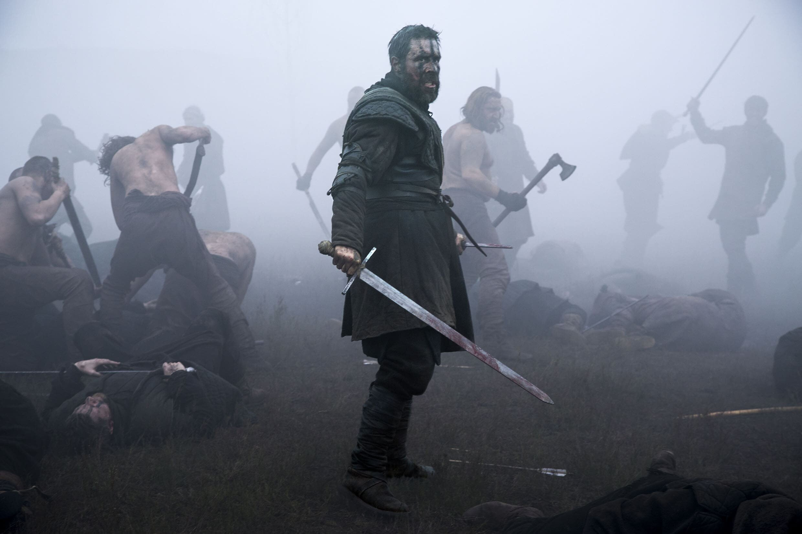

Macbeth: The Silent Killer of Scotland?


After the death of King Duncan, Macbeth was swiftly crowned the new King of Scotland in Scone, the country’s
capital. (Film4)
On May 10th, local authorities in Scotland reported the last of three brutal killings that connected back to Macbeth. First, it was the former king, Duncan, then it was Macbeth’s right hand, Banquo, and last month, the family of Macduff was massacred during the Thane of Fife’s absence. A video recording recovered from the local authorities shared the final words exchanged between Lady Macduff’s son and their murderer.
From thanes to close friends, suspicious murders continued to surround Macbeth ever since his kingship. During an interview with Lennox, he explained: “After his connotation, he grew paranoid of everyone close to him and developed hallucinations.”
Based on police reports, Duncan was assassinated in Macbeth’s home, Banquo was murdered while traveling by horse with his son, Fleance, and Macduff’s family was killed in their own castle. According to Macbeth’s porter, Macduff warned Macbeth and Lennox after witnessing Duncan’s corpse, “Approach the chamber and destroy your sight / With a new Gorgon. Do not bid me speak. / See and then speak yourselves” (2.3.82-84).
The deaths of both Duncan and Banquo suspiciously occurred when the King hosted a banquet or dinner, celebrating his successes toward power and influence. Whether these deaths were connected, orchestrated, or coincidences, many suspected they were responsible for Macbeth’s convenient rise in power.
For example, convinced that he should have been held accountable for the murder of his family, Macduff declared war and revenge on Macbeth, stating, “O, I could play the woman with mine eyes / And braggart with my tongue! [...] Front to front / Bring thou this fiend of Scotland and myself. / Within my sword’s length set him. If he ‘scape, / Heaven forgive him too.” (4.3.270-275).

Captured by a front-line photographer, Macduff and his English army advanced past Scottish troops to take over Macbeth and crown Malcolm, the rightful King of Scotland. (Jonathan Olley)
Unfortunately, the authorities had yet to distinguish shared motives or techniques that connected the killings to Macbeth before his death. However, Ross, a Scottish nobleman, theorized that Macbeth hired a group of ‘Ghost Assassinators’ to execute each murder, minimizing his direct involvement.
Although there was little evidence to accuse Macbeth in a court of law, Macduff’s wrath and certainty raise the question; was Macbeth the silent killer of Scotland?